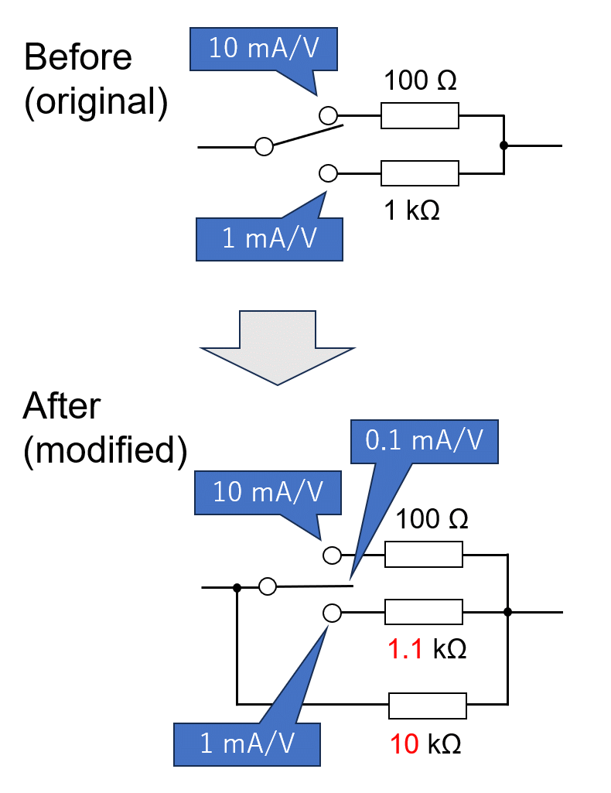
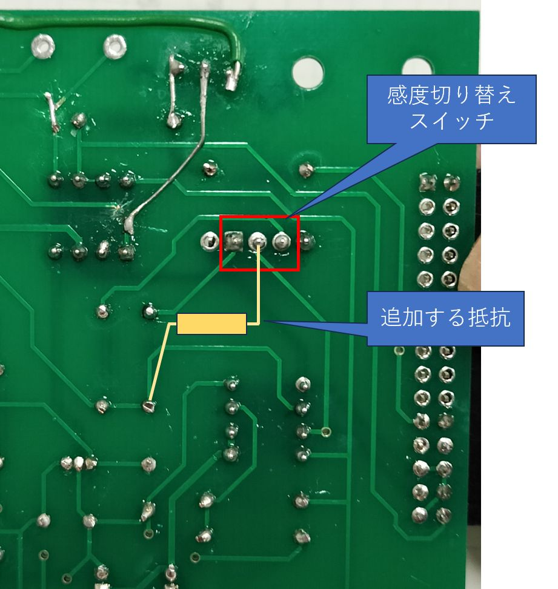

|
感度の切り替え部分の回路を Fig. 8a3.1 に示す． 元の回路では 1 kΩ (1 mA/V) と 100 Ω (10 mA/V) の切り替えであったところを回路図のように変更する．こうすると中立OFFの状態では感度設定抵抗としては 10 kΩ (0.1 mA/V) のみが有効であるが，1.1 kΩ 側にスイッチを倒すと 10 kΩと 1.1 kΩ が並列になり，10//1.1 = 0.990 kΩ となるので，誤差 1% で 1 kΩ (1 mA/V) とみなせる (もともと使っている抵抗が 5 % 級なのでこの差は無視できる．1%級を使っていた場合もギリギリ許容できる範囲．そもそも ADC の変換精度等の問題もあることにも注意)．同様に 100 Ω 側に倒した場合は計算上 99.0 Ωとなり，やはり誤差 1% で 100 Ω (10 mA/V) とみなせる．これで 0.1 mA/V，1 mA/V，10 mA/V の3段階の切り替えができる．スイッチレバーの位置の中央が最大感度 (1 ← 0.1 → 10 [mA/V]) というのが不自然なので，実使用時には注意が必要． 同様に，1 kΩ，11 kΩ，100 kΩ の組み合わせで，10 μA/V，0.1 mA/V，1 mA/V の切り替え等も計算上は可能である．10 μA/V クラスの感度にするにはノイズ対策が重要になる．またオフセット誤差も相対的に大きくなるので補正が必要になるので，OPアンプも高精度タイプを使用すべきである (性能向上のためのあれこれの項を参照)．その他の感度の組み合わせが必要であれば，抵抗の値を同様に計算してほしい．
|
 Fig. 8a3.1 回路変更 |
| 基板上にはこの追加抵抗を取り付けるランドがないので，基板の裏側で取り付けるとよいだろう (Fig. 8a3.2 の黄色で描いた部分)． |
 Fig. 8a3.2 実装例 (上の方には自然電位測定のための改造を加えてある) |